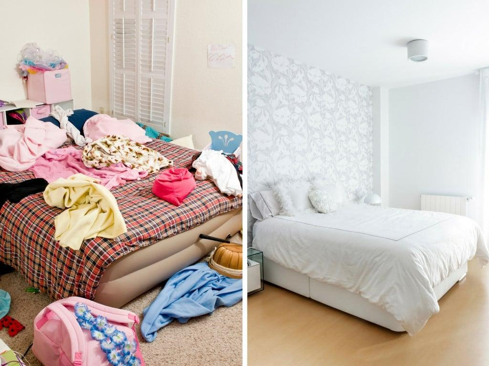

SewaKhoj connects you with verified and experienced house cleaners for home services in Butwal. We understand the importance of a clean home for your family's health and happiness.
We provide a comprehensive cleaning experience designed to tackle the dust and grime typical of Butwal's environment. Our professional cleaners follow a strict checklist to ensure no corner is missed.
Searching for "home services Butwal" often yields inconsistent results. SewaKhoj solves this by being a local-first platform that understands the specific needs of Rupandehi households. We offer:
At SewaKhoj, trust is our primary currency. Before a cleaner is sent to your doorstep in Butwal, they undergo a multi-step verification process:
Our standard cleaning starts at Rs. 500 for a 2-3 room apartment. Larger houses or deep-cleaning requests may vary based on the effort required.
Usually, customers provide basic tools like a broom, mop, and bucket. We recommend providing your preferred cleaning liquids to ensure the scent and hygiene standards you love.
If you are not satisfied with the quality of cleaning, please contact us within 24 hours. We will investigate and, if justified, send a worker back for a touch-up free of charge.
Yes! While we specialize in on-demand visits, we can arrange for daily or weekly maid services at discounted monthly subscription rates.
SewaKhoj was founded with the mission to organize the informal home service sector in Butwal. We noticed that families struggled to find reliable help while skilled workers struggled to find consistent jobs. By creating a verified marketplace, we ensure fair wages for workers and peace of mind for homeowners.
We are proud to operate under the guidelines of the Butwal Sub-Metropolitan City, contributing to the local economy of Rupandehi by digitizing essential services.
Join hundreds of happy families in Butwal who trust SewaKhoj.
📅 Book Your Visit Now